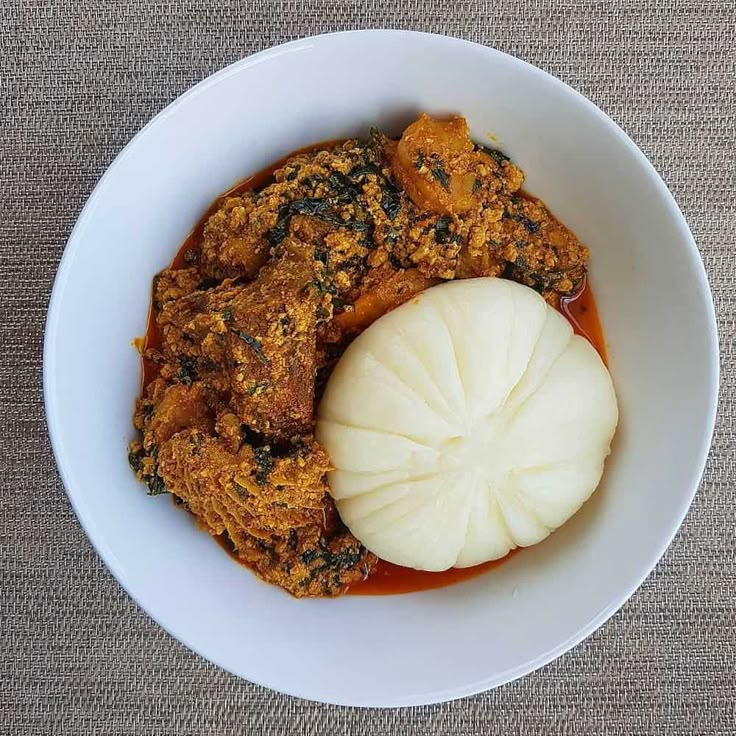
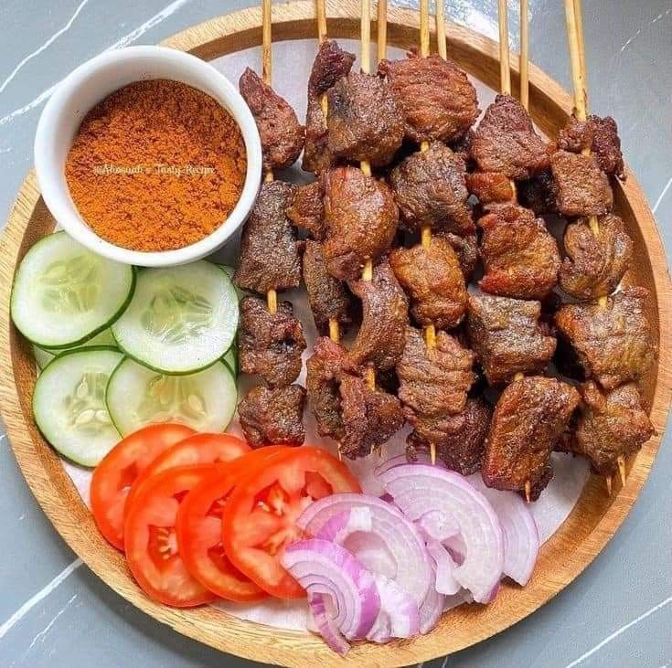
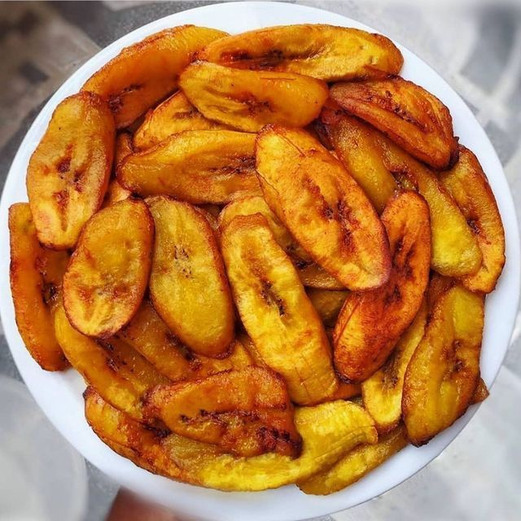

West African Recipes
Staples include rice, yams, plantain, and peanuts. Cooking often uses palm oil and slow stews.
Jollof Rice

The iconic one-pot rice dish, essential at any celebration, known for its smoky and spicy flavor profile.
View RecipeFufu and Egusi Soup
A thick, hearty soup made from ground melon seeds and leafy vegetables, served with a soft, starchy dough called Fufu.
View RecipeSuya
Spicy skewered meat, a popular street food, which is grilled over an open flame and coated in a peanut-based spice mix.
View RecipeFried Plantain (Dodo)
Sweet, ripe plantains, sliced and deep-fried until golden brown. A delicious side dish or snack.
View Recipe